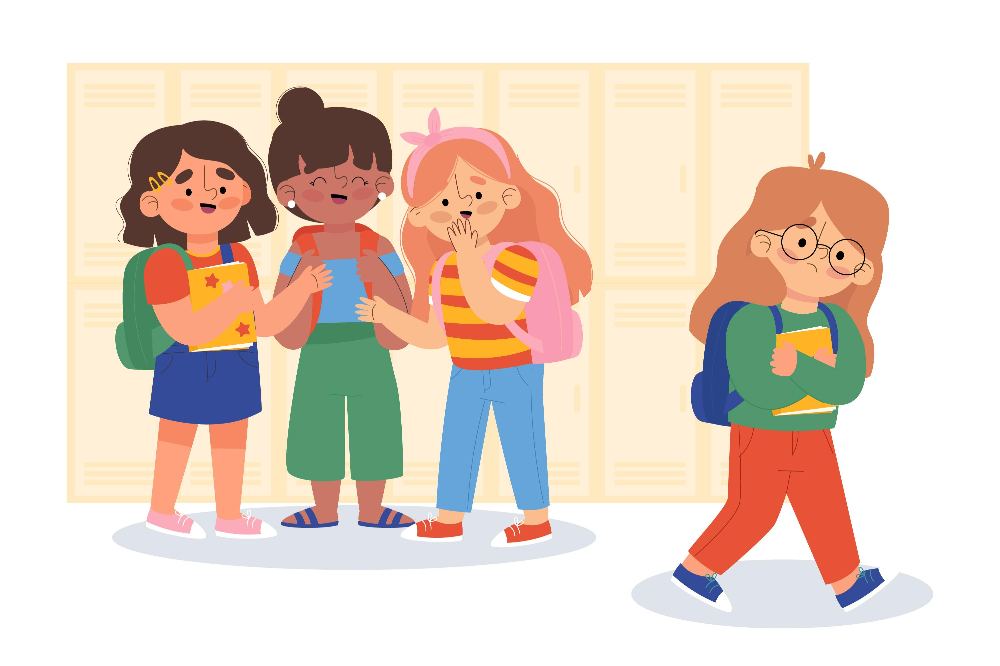
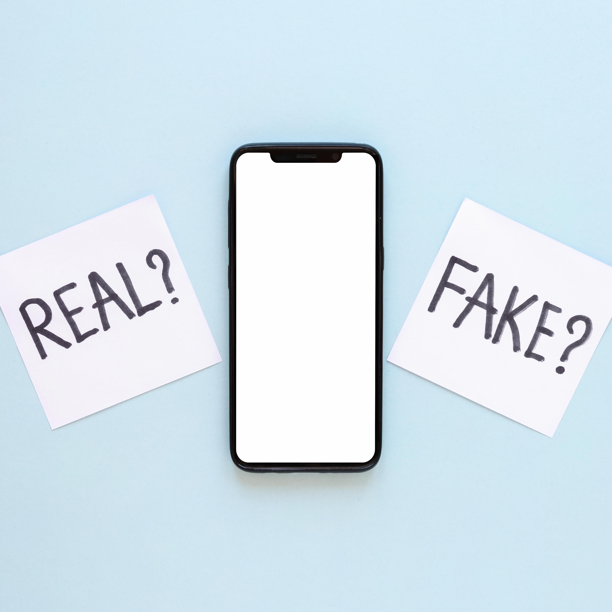

Regardless of age group, people are likely to be misled by misinformation......

Take an interesting example!
People of different ages also have the opportunity to be misled by wrong knowledge, which affects their judgment.
For teenager
Rumour......

- school 
Rumors can damage relationships, especially when they involve friends, classmates, teachers, or parents
Rumors can distract students and affect their learning and academic performance.

Speed of speardRumour
Over time, exposure to rumors can lead to serious mental health problems such as depression, anxiety, low self-esteem, and suicidal thoughts.
Rumors can lead to social isolation and emotional distress
For adult
Misinformation......
- Finance and Investment
- Advertisement
- Medical insurance
- Social media

False market rumors can affect stock prices and investor confidence, leading to market instability and economic losses
Spreading false information may violate regulators' regulations
Consumer outrage and complaints: When consumers discover false claims in an ad, they may become angry and file complaints
Misleading advertising may deceive or mislead consumers into making irrational purchasing decisions.
For elderly
Fake news......


False medical information or rumors can lead people to make poor health decisions and delay or ignore real medical needs.
Fake news in healthcare can cause panic and anxiety

Fake news may mislead the public about specific events or issues
Widespread dissemination of fake news may undermine media credibility
Interesting fake news
This section is made by yoyo.